1 / 53
หน้าเข้าสู่ระบบ (Login)
/login
เริ่มต้นใช้งานที่หน้านี้ กรอกอีเมลและรหัสผ่านของบัญชีสำนักงาน แล้วกดเข้าสู่ระบบ ระบบจะพาเข้าสู่ Dashboard
1 กรอกอีเมลผู้ใช้2 กรอกรหัสผ่าน3 กดเพื่อเข้าสู่ระบบ4 ลืมรหัสผ่าน กดที่นี่
2 / 53
แดชบอร์ด — ภาพรวมงาน
/dashboard
หน้าแรกหลังเข้าสู่ระบบ สรุปคดีที่ยังไม่ปิด งานที่ยังไม่เสร็จ งานเกินกำหนด และนัดที่กำลังจะมาถึง พร้อมรายการงานที่ต้องทำ/เรื่องรับเข้าล่าสุด คดีล่าสุด และนัดหมายถัดไป
1 เมนูหลัก ใช้สลับหน้าจอทั้งระบบ2 ช่องค้นหาด่วน คดี/ลูกค้า3 ชื่อหน้าและสำนักงานที่ใช้งาน4 จำนวนคดีที่ยังไม่ปิด5 จำนวนงานที่ยังไม่เสร็จ6 งานที่เลยกำหนดส่งแล้ว7 นัดที่กำลังจะถึง8 ปุ่มลัด รับงานใหม่9 ไปหน้ารายการคดีทั้งหมด
3 / 53
คดี — รายการคดีทั้งหมด
/cases
ตารางคดีทั้งหมดของสำนักงาน ค้นหาด้วย Own Ref / Customer Ref / เลขดำ / เลขแดง / ชื่อลูกค้า กรองตามสถานะ และส่งออกเป็นไฟล์ได้
1 ค้นหาคดีจากเลขอ้างอิงหรือชื่อลูกค้า2 กรองตามสถานะคดี3 ตารางคดี คลิกแถวเพื่อเปิดรายละเอียด4 สร้างคดีใหม่
4 / 53
Case Workflow Board — บอร์ดติดตามสถานะ
/cases/board
มุมมองแบบคัมบัง แบ่งคดีตามสถานะ เปิดคดี → ร่างเอกสาร → นัดศาล → ปิดคดี ลากการ์ดเพื่อเปลี่ยนสถานะได้ทันที
1 ตัวกรองมุมมองบอร์ด2 คอลัมน์สถานะ พร้อมจำนวนคดี3 การ์ดคดี ลากเพื่อเปลี่ยนสถานะ / คลิกเพื่อเปิด
5 / 53
สร้างคดีใหม่ — ขั้นที่ 1 เลือกประเภทคดี
/cases/new
การสร้างคดีเป็นแบบ 4 ขั้นตอน ขั้นแรกเลือกประเภทคดี ระบบจะปรับฟิลด์ในขั้นถัดไปตามประเภทที่เลือก
1 หัวข้อหน้า สร้างคดีใหม่2 คลิกเลือกประเภทคดี3 กดถัดไปเพื่อไปขั้นถัดไป (ต้องเลือกประเภทก่อน)
6 / 53
สร้างคดีใหม่ — ขั้นที่ 2 ข้อมูลพื้นฐาน
/cases/new
กรอกข้อมูลคดี Own Ref ถูกสร้างอัตโนมัติ (TSBREF + ปี + เลขรัน) ส่วนเลขดำ/เลขแดงกรอกในรูปแบบ เลขที่/ปีพ.ศ. เช่น 123/2567 และระบุลูกค้ากับรายได้โดยประมาณ
7 / 53
รายละเอียดคดี
/cases/:id
หน้ารวมข้อมูลคดีหนึ่งเรื่อง สถานะ ทนายผู้รับผิดชอบ ผู้ช่วย ศาล เลขคดี และรายได้โดยประมาณ พร้อมแท็บย่อย งาน / เอกสาร / ปฏิทิน / การเงิน
1 ชื่อคดีและเลขอ้างอิง2 แท็บเอกสารของคดี
8 / 53
งานในคดี (Tasks)
/cases/:id/tasks
สร้างและติดตามงานย่อยของคดี กำหนดผู้รับผิดชอบและวันครบกำหนด งานที่เลยกำหนดจะแสดงบนแดชบอร์ด
1 หน้างานของคดีนี้2 เพิ่มงานใหม่3 ปุ่มจัดการงาน
9 / 53
เอกสารของคดี
/cases/:id/documents
อัปโหลดและจัดเวอร์ชันเอกสารรายคดี ตั้งค่าการมองเห็นเพื่อเปิด/ปิดให้ลูกค้าเห็นผ่าน Client Portal และดาวน์โหลดได้
1 เอกสารของคดีนี้2 อัปโหลดเอกสารใหม่
10 / 53
การเงินรายคดี — เวลาทำงาน ค่าใช้จ่าย ใบแจ้งหนี้
/cases/:id/billing
บันทึกชั่วโมงทำงาน ค่าใช้จ่ายที่ขอเบิก และออกใบแจ้งหนี้ของคดีนี้ ยอดเงินต้องมากกว่า 0 เสมอ
1 สรุปการเงินของคดี
11 / 53
ลูกค้า — ทะเบียนลูกค้าและผู้ติดต่อ
/clients
รายชื่อลูกค้าทั้งหมด ค้นหาได้จากชื่อ และเปิดดูผู้ติดต่อ คดีที่เกี่ยวข้อง และสิทธิ์เข้าใช้ Client Portal
1 เมนูหลัก ใช้สลับหน้าจอทั้งระบบ2 ช่องค้นหาด่วน คดี/ลูกค้า3 ค้นหาลูกค้า4 เพิ่มลูกค้าใหม่
12 / 53
เพิ่มลูกค้า — พร้อมผู้ติดต่อหลายคน
/clients/new
สร้างลูกค้าใหม่ เลือกประเภทบุคคล/นิติบุคคล และเพิ่มผู้ติดต่อได้หลายคน เบอร์โทรต้องเป็นตัวเลข และต้องเลือกผู้ติดต่อหลัก 1 คน
1 ประเภท บุคคล หรือ นิติบุคคล
13 / 53
ตารางศาล — ปฏิทินนัดหมาย
/court-schedule
ปฏิทินนัดศาลและนัดหมายลูกค้า สลับมุมมอง วัน / สัปดาห์ / เดือน และเพิ่มนัดใหม่ได้จากปุ่ม Add Event
1 สรุปนัดในเดือนนี้และการแจ้งเตือน
14 / 53
เอกสาร — คลังเอกสารรวมทุกคดี
/documents
ค้นหาเอกสารข้ามคดี กรองตามคดี อัปโหลดเอกสารใหม่ และลิงก์ไปยัง Knowledge Base
1 กรองตามคดี2 ไปยังคลังความรู้
15 / 53
ค่าใช้จ่าย & การเงิน
/expenses
ดูกำไรรายคดี บันทึกค่าใช้จ่ายเพื่อขออนุมัติ และติดตามใบแจ้งหนี้ ยอดเงินต้องมากกว่า 0 และไม่เกิน 100,000,000 บาท
1 ตารางกำไรรายคดี / รายการเบิก / ใบแจ้งหนี้
รายงานเชิงบริหาร ปริมาณคดีตามประเภท รายได้ต่อทนาย บันทึกการขึ้นศาล และสรุปค่าใช้จ่าย ส่งออกได้ทั้งหมด
1 การ์ดรายงานแต่ละหัวข้อ
17 / 53
Knowledge Base — คลังสรุปคดี
/knowledge
รวมบทสรุปคดีที่ผ่านมา ค้นหาและกรองตามประเภท/ผลคดี เพื่อใช้อ้างอิงกับคดีใหม่
1 กรองตามประเภทคดีและผลคดี
18 / 53
จัดการทีม — เชิญและกำหนดสิทธิ์
/team
เชิญสมาชิกใหม่ด้วยอีเมล กำหนดบทบาท (OWNER / LAWYER / CLERK) ดูสมาชิกปัจจุบันและคำเชิญที่รอตอบรับ
1 อีเมลผู้ที่ต้องการเชิญ2 เลือกบทบาท/สิทธิ์3 ส่งคำเชิญทางอีเมล4 สมาชิกในทีมปัจจุบัน
19 / 53
แพ็กเกจ & การชำระเงิน
/account/billing
ดูสถานะทดลองใช้/แพ็กเกจปัจจุบัน จำนวนผู้ใช้ที่ใช้ไป และเลือกสมัครแพ็กเกจ Solo / Firm / Professional
1 สถานะแพ็กเกจปัจจุบันและจำนวนผู้ใช้2 เลือกแพ็กเกจแล้วชำระเงิน
20 / 53
เบิกจ่าย — อนุมัติค่าใช้จ่าย (เฉพาะเจ้าของสำนักงาน)
/admin/reimbursements
คิวอนุมัติค่าใช้จ่ายที่ทีมส่งเข้ามา กรองตามสถานะ แล้วกด Approve / Reject / Mark Paid
21 / 53
ประเภทคดี — ตั้งค่าฟิลด์ของแต่ละประเภท
/admin/case-types
กำหนดประเภทคดีของสำนักงานและฟิลด์เฉพาะที่จะให้กรอกในขั้นตอนสร้างคดี
1 ประเภทคดีที่มีอยู่
22 / 53
ศาล — ทะเบียนศาลของสำนักงาน
/admin/courts
จัดการรายชื่อศาลที่ใช้เลือกตอนสร้างคดีและตั้งนัด เพิ่ม แก้ไข หรือลบได้
1 ทะเบียนศาล
23 / 53
ตั้งค่า — โปรไฟล์ ธีม และการเชื่อมต่อ
/settings
แก้ไขชื่อผู้ใช้ สลับโหมดสว่าง/มืด และในหัวข้อ "การเชื่อมต่อ" ด้านล่างมีทั้งการตั้งค่า LINE Messaging API ของทั้งสำนักงาน (เฉพาะแอดมิน) และปุ่มเชื่อมต่อ LINE ส่วนตัวของแต่ละคน
1 ข้อมูลโปรไฟล์ (อีเมลแก้ไขไม่ได้)2 ตั้งค่า LINE ของสำนักงาน (แอดมิน) — Channel ID/Secret3 ทดสอบว่าตั้งค่า LINE ของสำนักงานถูกต้อง4 ส่วนเชื่อมต่อบัญชี LINE ของตัวเอง5 กดเพื่อเชื่อมต่อ/ยกเลิกเชื่อมต่อ LINE ส่วนตัว
24 / 53
Client Portal — หน้าเข้าสู่ระบบของลูกค้า
/portal/login
ลูกค้าเข้าใช้งานได้สองแบบ: กรอกอีเมล+รหัสผ่านแล้วกดเข้าสู่ระบบตามปกติ หรือกด "ส่งลิงก์เข้าสู่ระบบทางอีเมล" เพื่อรับ magic link ทางอีเมลโดยไม่ต้องจำรหัสผ่าน
1 อีเมลของลูกค้า2 รหัสผ่าน (ถ้าตั้งไว้แล้ว)3 เข้าสู่ระบบด้วยรหัสผ่าน4 หรือขอ magic link ทางอีเมลแทน
25 / 53
Client Portal — ตรวจสอบอีเมล
/portal/check-email
หลังขอ magic link ระบบพาไปหน้านี้ให้ลูกค้าไปเปิดอีเมลและกดลิงก์ที่ส่งไปเพื่อเข้าสู่ระบบ
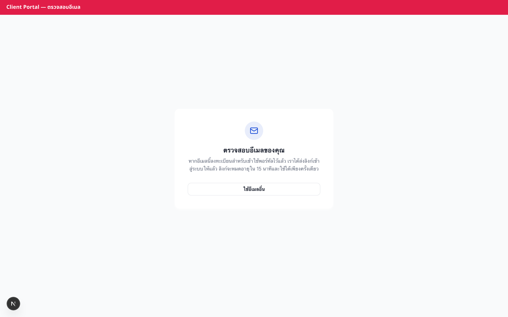
26 / 53
เริ่มใช้งานสำนักงาน — นำเข้าข้อมูลเดิม
/getting-started
ใช้ตอนเริ่มระบบครั้งแรก ดาวน์โหลดแบบฟอร์ม CSV กรอกรายชื่อคดี/ลูกค้าเดิม แล้วอัปโหลดกลับเข้าระบบ ระบบจะแสดงตัวอย่างก่อนนำเข้าจริงเสมอ
1 เลือกไฟล์ CSV ที่กรอกแล้ว2 ไปตั้งค่า Playbook ของสำนักงาน
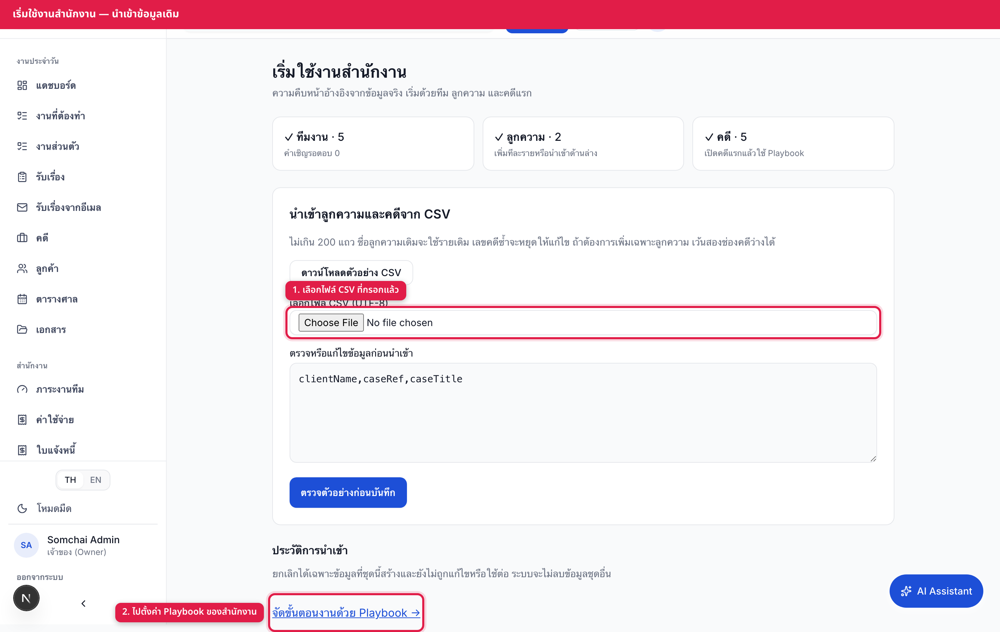
27 / 53
วันของฉัน — สรุปงานและนัดวันนี้
/my-day
มุมมองแบบรายวันสำหรับเตรียมตัวก่อนเริ่มงาน รวมนัดศาล นัดลูกค้า และงานที่ครบกำหนดวันนี้ไว้ในที่เดียว กดที่รายการเพื่อเปิดรายละเอียด
1 หัวข้อหน้า วันของฉัน
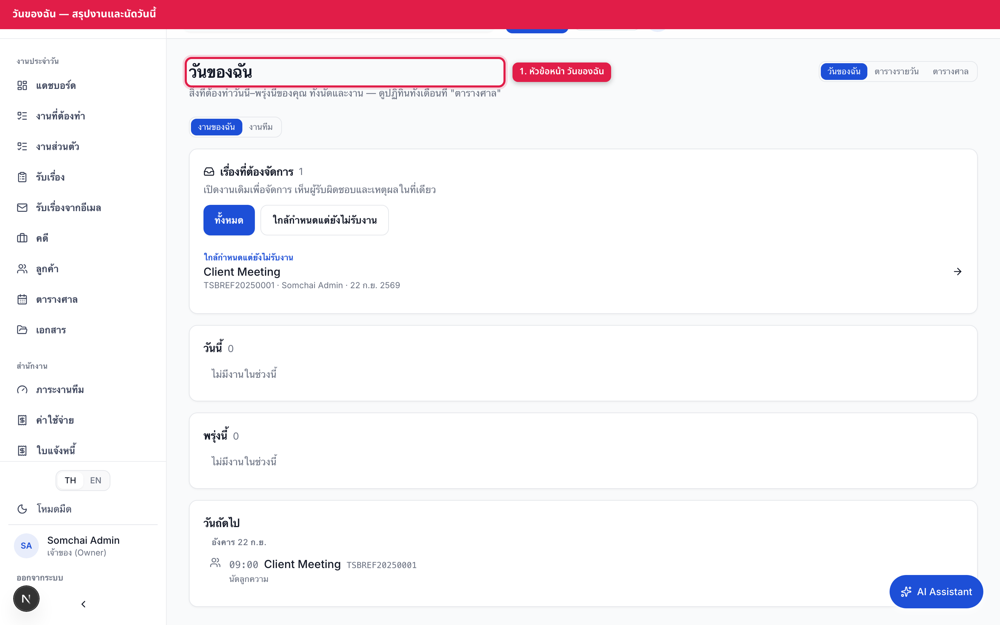
28 / 53
งานที่ต้องทำ — กล่องงานรวมทั้งงานคดีและงานส่วนตัว
/work
รวมงานทั้งหมดที่มอบหมายให้คุณ ทั้งงานในคดีและงานทั่วไป กรองตาม ทั้งหมด/มอบหมายให้ฉัน/งานคดี/งานทั่วไป และตามกำหนดส่ง ค้นหาได้จากชื่องาน คดี หรือผู้รับผิดชอบ
1 ค้นหางาน คดี หรือผู้รับผิดชอบ2 กรองเฉพาะงานของฉัน3 กรองงานที่เลยกำหนดส่ง4 เพิ่มงานส่วนตัวใหม่
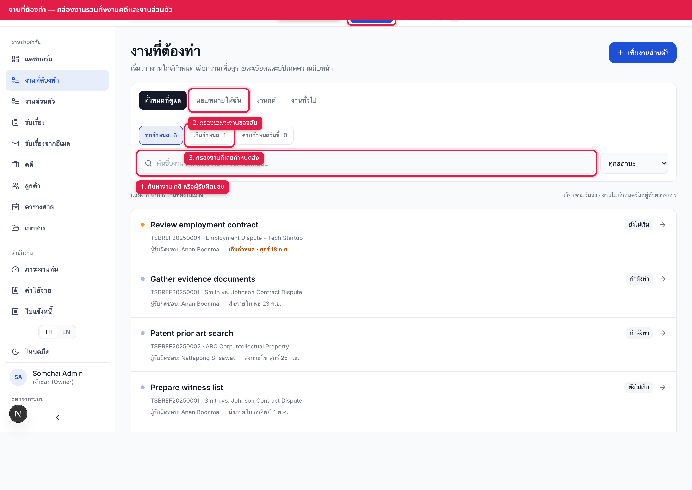
29 / 53
งานส่วนตัว — เช็คลิสต์ของแต่ละคน
/todos
จดงานส่วนตัวที่ไม่ผูกกับคดี เช่น งานธุรการหรืองานที่ได้รับมอบหมายนอกคดี สลับดูงานของตัวเอง/ทีม
1 เพิ่มงานใหม่
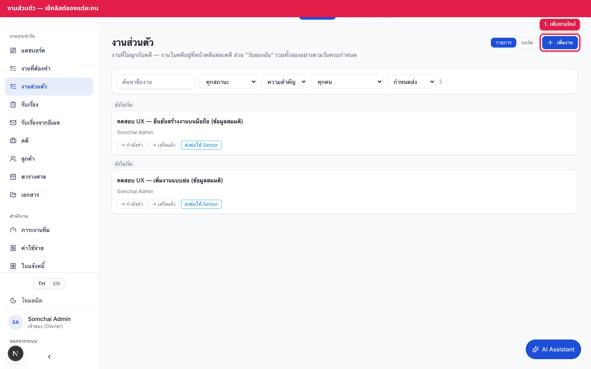
30 / 53
ปฏิทิน — ตารางรายวันของสำนักงาน
/calendar
ปฏิทินรวมนัดทั้งสำนักงาน ทุกคดีและทุกทนาย สลับมุมมองวัน/สัปดาห์/เดือนได้เหมือนตารางศาล
1 เพิ่มนัดหมายใหม่2 หัวข้อหน้า ปฏิทิน
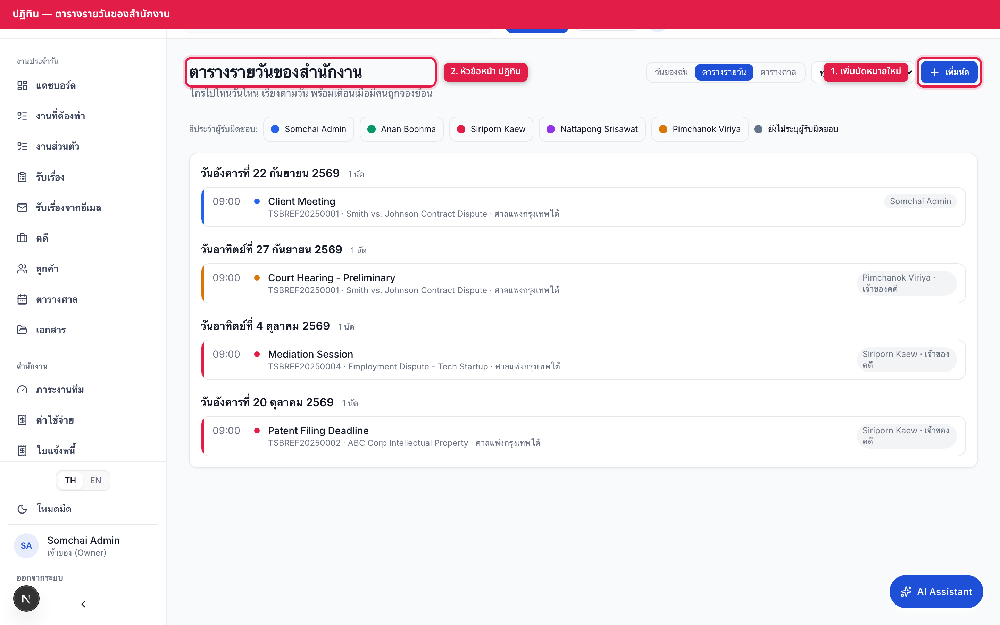
31 / 53
ใบแจ้งหนี้ — ออกและติดตามการชำระเงิน
/invoices
รวมใบแจ้งหนี้ทุกคดี ดูสถานะค้างชำระ/ชำระแล้ว และออกใบแจ้งหนี้ใหม่จากชั่วโมงทำงานและค่าใช้จ่ายที่บันทึกไว้
1 หัวข้อหน้า ใบแจ้งหนี้
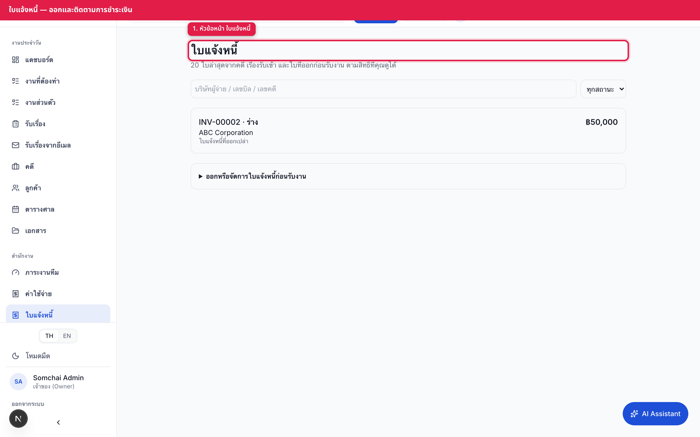
32 / 53
คดี — แท็บปฏิทิน/นัดของคดีนี้
/cases/:id/calendar
ลิงก์ลัดจากแดชบอร์ด/My Day พาไปที่แท็บปฏิทินของคดีนั้นโดยตรง แสดงนัดศาลและนัดหมายเฉพาะคดีนี้
1 ชื่อคดีที่กำลังดู
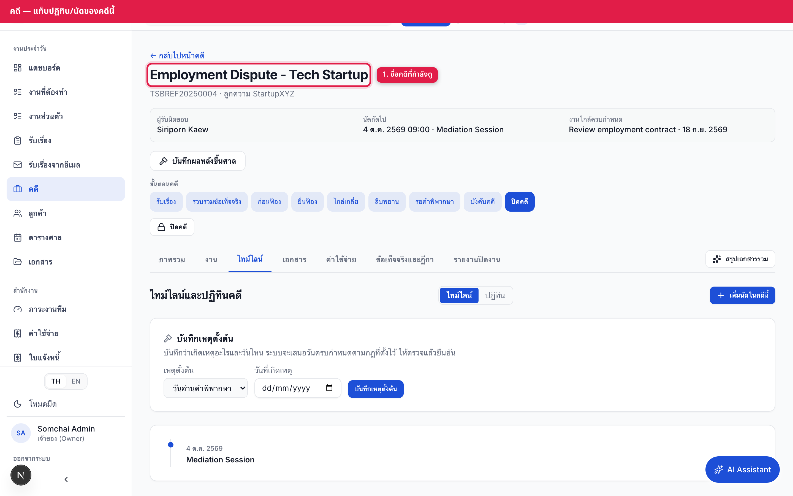
33 / 53
คดี — แท็บเคลมประกัน
/cases/:id/insurance
สำหรับคดีที่เกี่ยวข้องกับการเคลมประกัน ติดตามขั้นตอนการเคลมและเอกสารที่เกี่ยวข้องแยกจากแท็บอื่น
1 ชื่อคดีที่กำลังดู
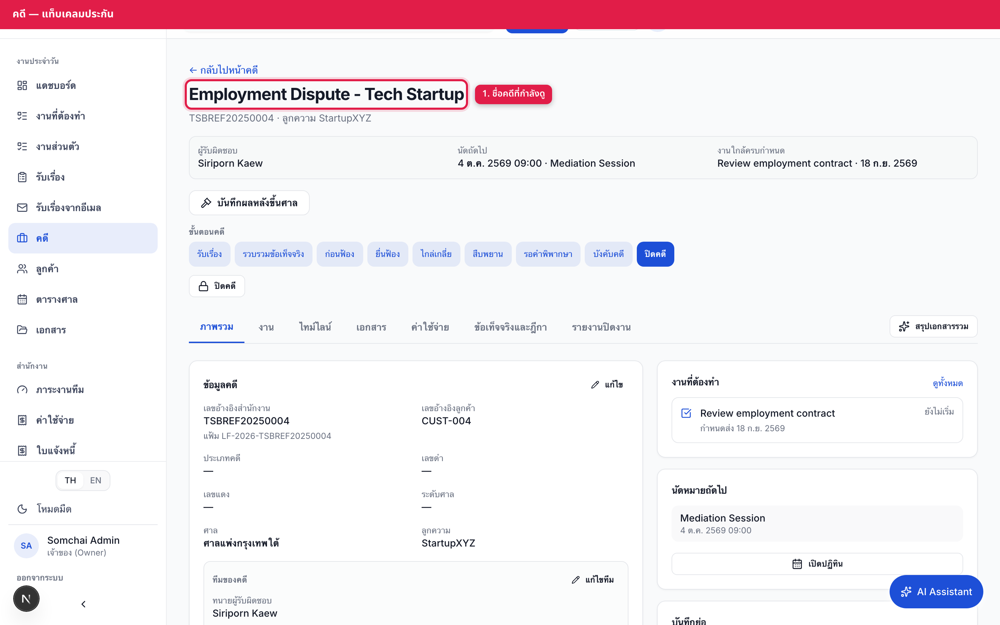
34 / 53
คดี — แท็บข้อความกับลูกค้า
/cases/:id/messages
พูดคุยกับลูกค้าเป็นรายคดี ข้อความที่ส่งจากแท็บนี้จะไปปรากฏใน Client Portal ของลูกค้าด้วย
1 ชื่อคดีที่กำลังดู
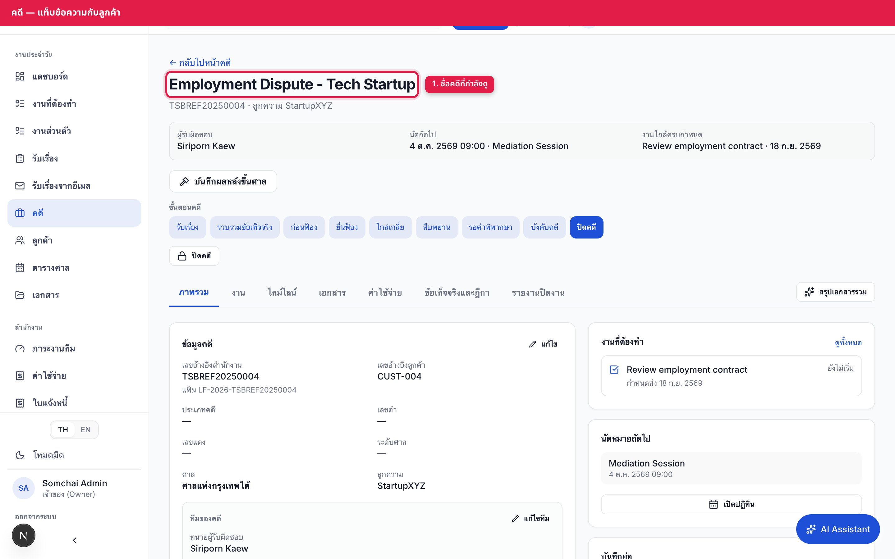
35 / 53
คดี — แท็บสรุปปิดคดี
/cases/:id/closing-report
สรุปผลคดีเมื่อปิดคดีแล้ว ใช้ประกอบการส่งอีเมลปิดงานให้ลูกค้าและเก็บเป็นสรุปคดีใน Knowledge Base
1 ชื่อคดีที่กำลังดู
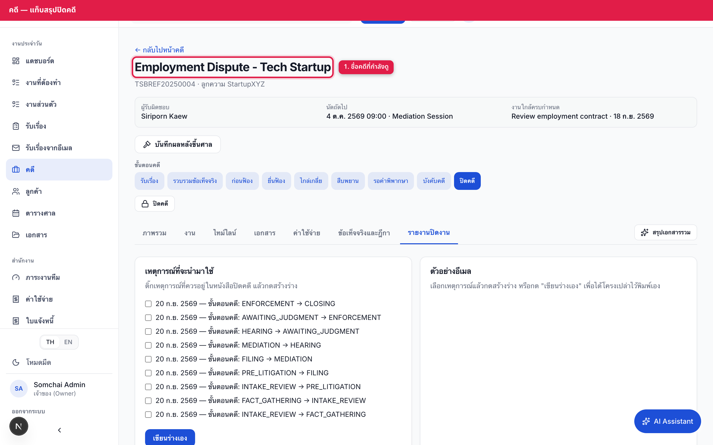
36 / 53
รับเรื่อง — คิวเรื่องที่กำลังคัดกรอง
/intake
จุดเริ่มต้นก่อนเปิดเป็นคดีจริง ใช้คัดกรองเรื่องที่ลูกค้าติดต่อเข้ามา (โทร/อีเมล/เดินเข้ามา) ก่อนตัดสินใจรับเป็นคดี
1 สร้างเรื่องรับเข้าใหม่
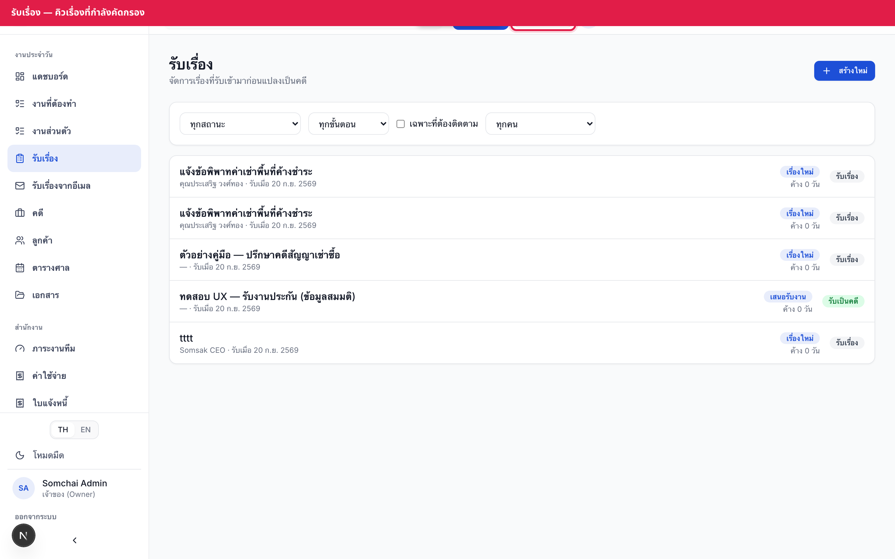
37 / 53
รับเรื่องใหม่ — กรอกรายละเอียดเบื้องต้น
/intake/new
กรอกหัวข้อเรื่อง วางข้อความจากอีเมล/แชทของลูกค้า ใส่ชื่อผู้ติดต่อ และเลือกผู้รับผิดชอบได้หลายคน ระบบช่วยสรุปข้อเท็จจริงเบื้องต้นให้
1 หัวข้อเรื่องโดยย่อ2 วางข้อความจากอีเมล/แชทของลูกค้า3 ชื่อผู้ติดต่อหรือบริษัท
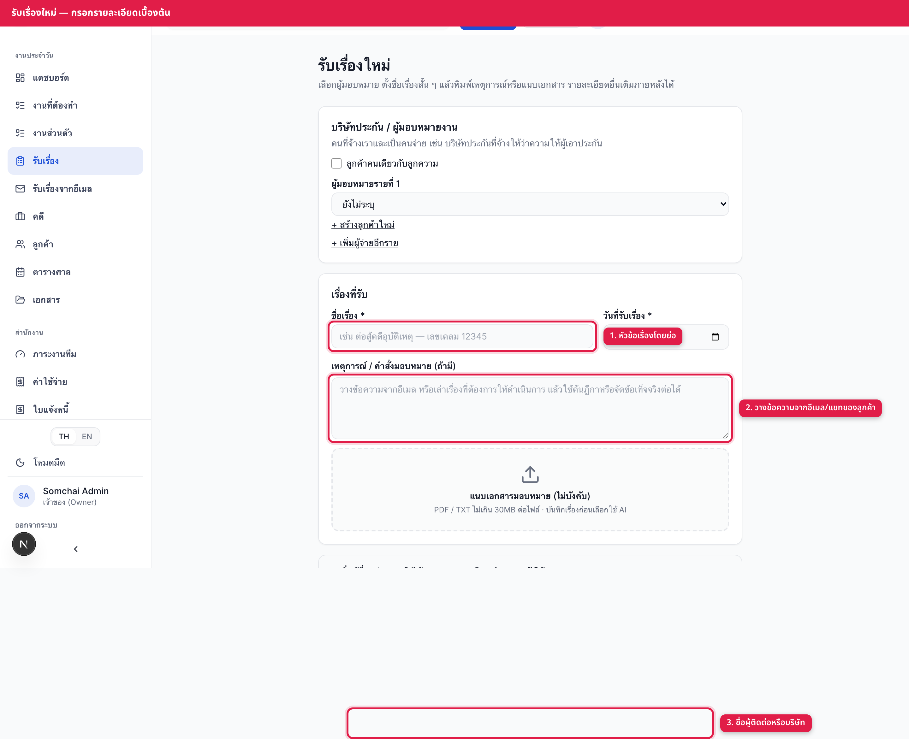
38 / 53
ห้องทำงานเรื่องรับเข้า — คัดกรองก่อนเปิดคดี
/intake/:id
พื้นที่ทำงานของเรื่องรับเข้าหนึ่งเรื่อง จัดข้อเท็จจริง มอบหมายผู้รับผิดชอบ แนบเอกสาร และเมื่อพร้อมก็กดแปลงเป็นคดีจริงได้จากหน้านี้
1 หัวข้อเรื่องรับเข้า
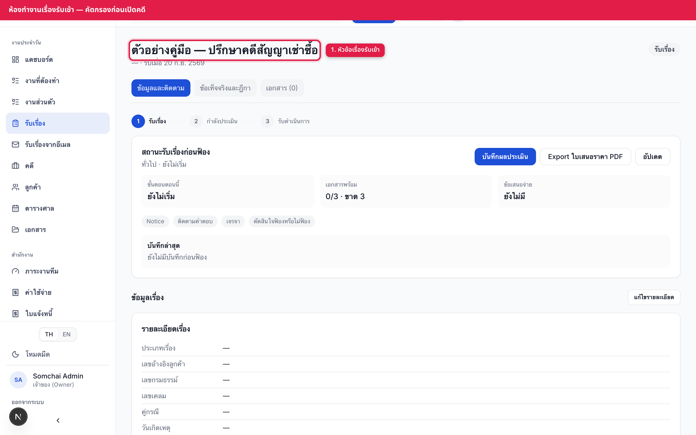
39 / 53
เรื่องที่ส่งจาก Customer Portal
/intake/portal-submissions
คำขอที่ลูกค้ากรอกเข้ามาเองผ่าน Client Portal (ก่อนเป็นลูกค้าในระบบ) พนักงานตรวจแล้วเลือกแปลงเป็นเรื่องรับเข้า/คดีได้
1 หัวข้อหน้า
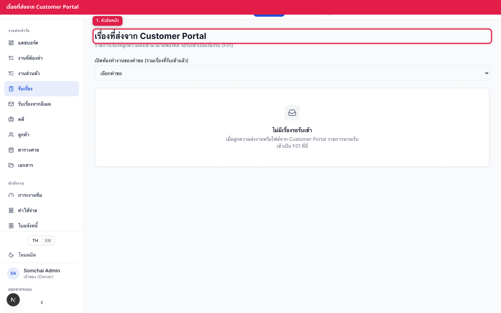
40 / 53
รับเรื่องจากอีเมล — กล่องอีเมลที่เชื่อมต่อไว้
/email-intake
แสดงอีเมล/เธรดที่ระบบดึงมาจากกล่องอีเมลที่เชื่อมต่อ (Outlook) AI จะช่วยเสนอข้อมูลคดีเบื้องต้นให้ตรวจสอบก่อนรับเข้า คลิกแถวเพื่อเปิดดูรายละเอียด
1 หัวข้อหน้า
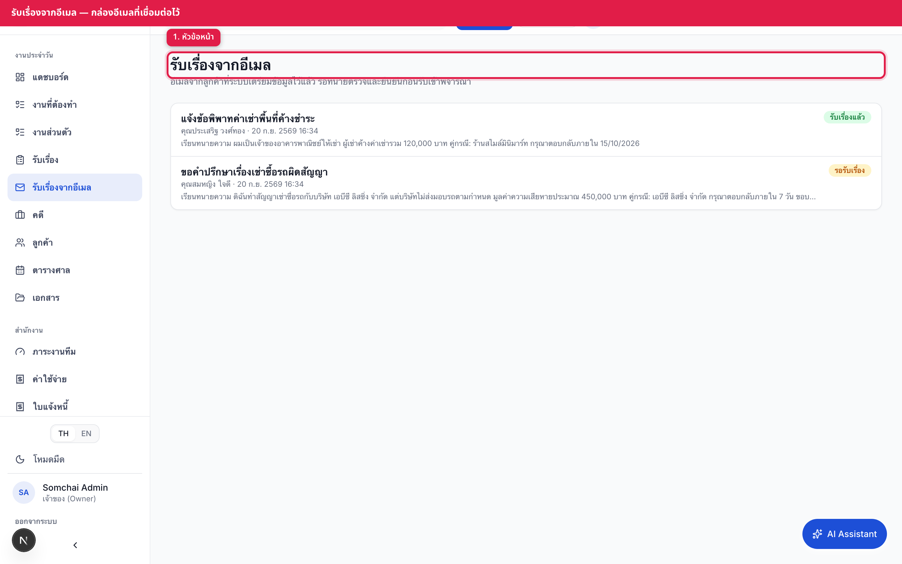
41 / 53
อีเมลรับเข้า — ตรวจสอบและยืนยันข้อมูล
/email-intake/:threadId
อ่านเนื้อความอีเมลเต็ม ตรวจข้อมูลที่ AI เสนอ (ยืนยัน/ปฏิเสธทีละรายการ) แล้วกดยืนยันเพื่อสร้างเป็นเรื่องรับเข้า
1 หัวข้ออีเมล
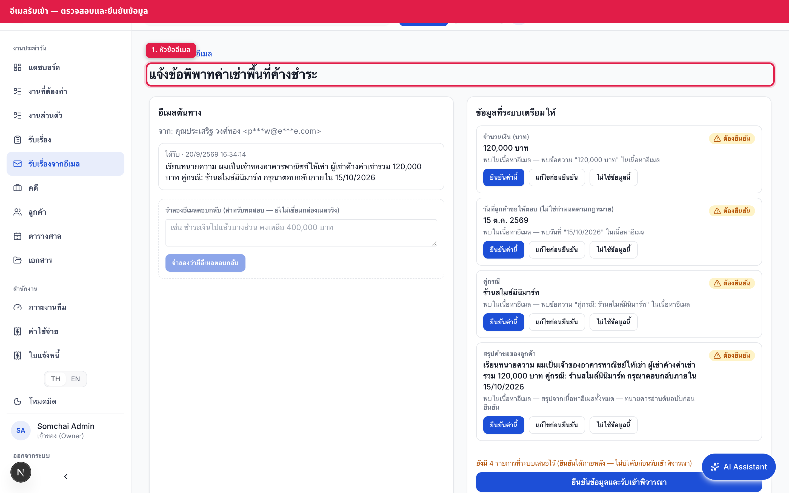
42 / 53
บันทึกค่าใช้จ่ายใหม่
/expenses/new
กรอกยอดเงิน รายละเอียด แนบใบเสร็จ และเลือกคดีที่เกี่ยวข้อง (ถ้ามี) เพื่อส่งขออนุมัติเบิกค่าใช้จ่าย
1 ยอดเงิน (บาท)
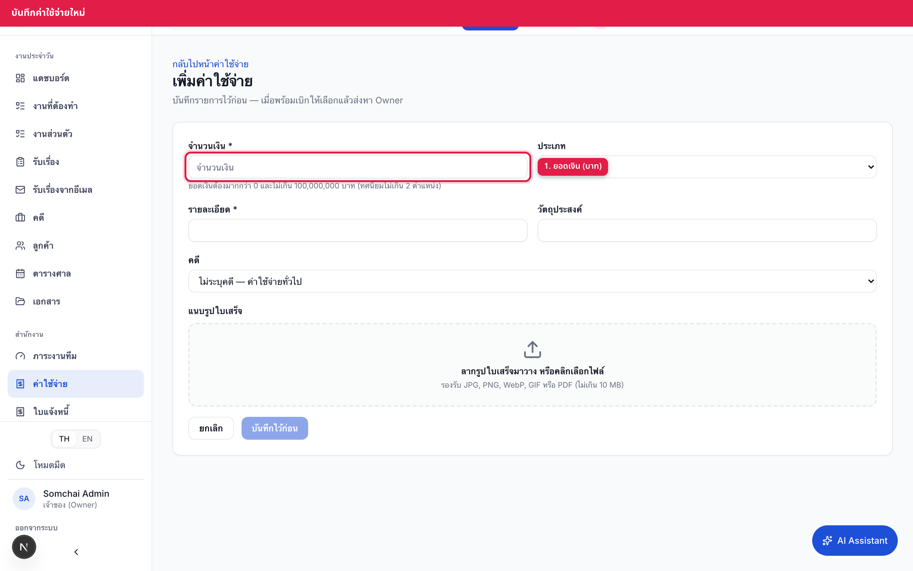
43 / 53
แบบฟอร์มเบิกค่าใช้จ่าย — พิมพ์/ส่งขออนุมัติ
/expenses/claim
รวมรายการค่าใช้จ่ายที่ยังเป็นร่างเป็นแบบฟอร์มเบิกฉบับเดียว พิมพ์เป็น PDF หรือส่งให้เจ้าของสำนักงานอนุมัติทีเดียว
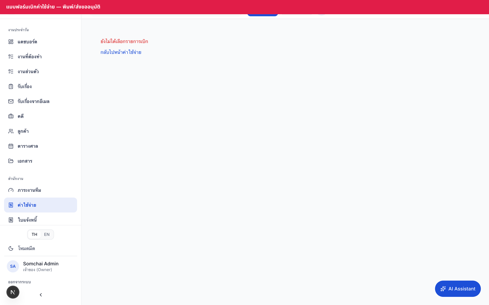
44 / 53
Playbooks — ชุดงานมาตรฐานของแต่ละประเภทคดี
/playbooks
กำหนดชุดงาน/เอกสารมาตรฐานสำหรับคดีแต่ละประเภท (เช่น คดีอุบัติเหตุ คดีแพทย์) เมื่อเปิดคดีใหม่แล้วนำ Playbook มาใช้ ระบบจะสร้างงานตามชุดนี้ให้อัตโนมัติ
1 หัวข้อหน้า Playbooks2 ไปเลือกคดีเพื่อนำ Playbook ไปใช้
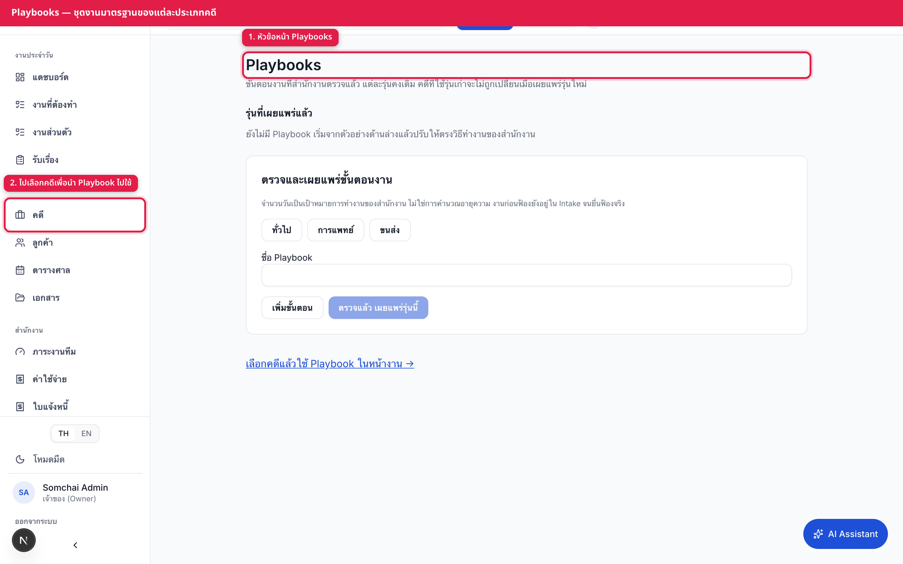
45 / 53
SOP / คู่มือการทำงาน
/sops
คลังคู่มือ/ขั้นตอนมาตรฐานภายในสำนักงาน ค้นหาได้ เจ้าของสำนักงานเพิ่ม/แก้ไข/ลบได้ ใช้อ้างอิงเวลาอบรมพนักงานใหม่
1 ค้นหา SOP2 เพิ่ม SOP ใหม่ (เจ้าของสำนักงาน)
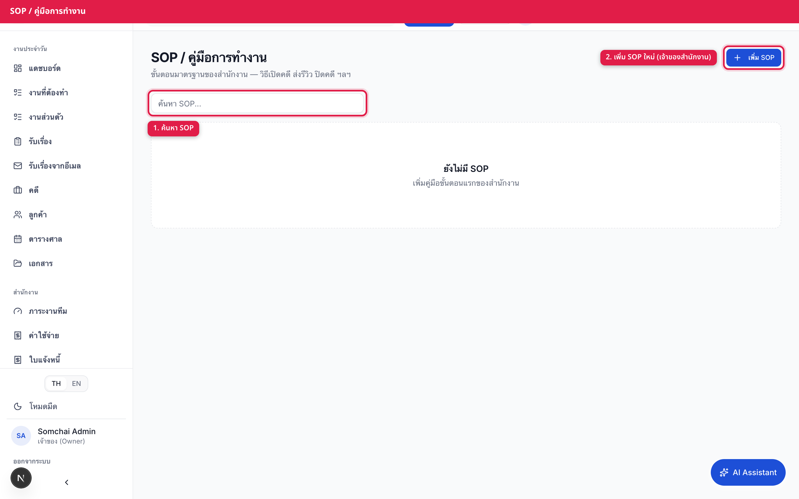
46 / 53
ภาระงานทีม — มอบหมายงานให้สมดุล
/operations
ภาพรวมภาระงานของทีมทั้งหมด ดูว่าใครงานล้นใครงานว่าง แล้วมอบหมายงานเพิ่มเติมให้สมดุลกันได้จากหน้านี้
1 หัวข้อหน้า ภาระงานทีม
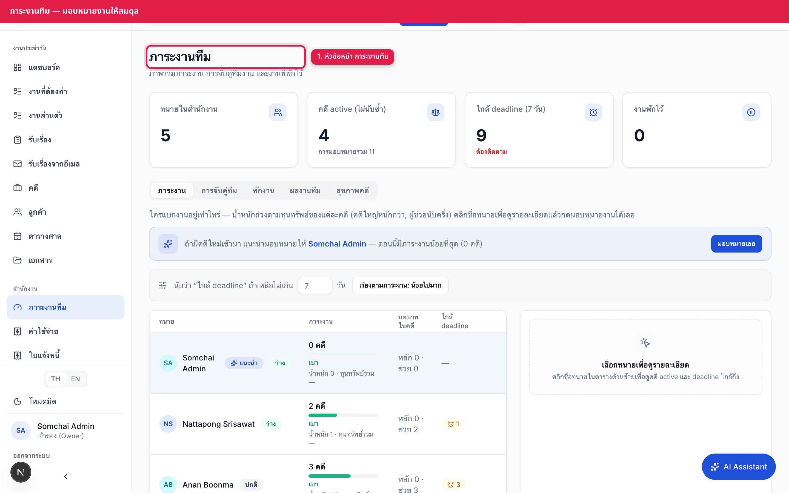
47 / 53
การใช้งาน AI — ติดตามการใช้เครดิต
/ai-usage
ดูว่าใครในทีมเรียกใช้ฟีเจอร์ AI (ค้นฎีกา สรุปเอกสาร) มากน้อยแค่ไหน สลับช่วงเวลาดู 7/14/30 วัน คลิกรายการเพื่อดูต้นทางของการเรียกนั้น
1 หัวข้อหน้า การใช้งาน AI
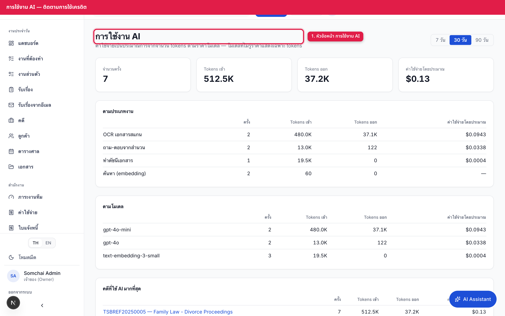
48 / 53
บันทึกการใช้งาน — Audit Log (เฉพาะเจ้าของสำนักงาน)
/admin/audit-log
ประวัติการกระทำสำคัญทุกอย่างในระบบ ใครทำอะไรเมื่อไหร่ กรองตามประเภทการกระทำได้ ใช้ตรวจสอบย้อนหลังเมื่อมีข้อสงสัย
1 หัวข้อหน้า Audit Log
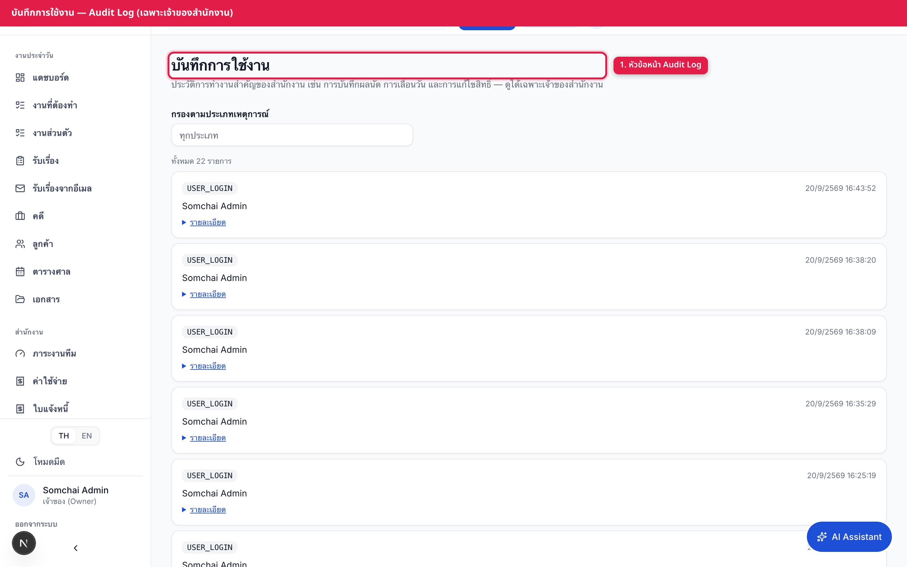
49 / 53
กฎวันครบกำหนด — คำนวณเดดไลน์อัตโนมัติ
/admin/deadline-rules
ตั้งกฎให้ระบบคำนวณวันครบกำหนดของงานอัตโนมัติตามประเภทคดี/เหตุการณ์ (เช่น ยื่นอุทธรณ์ภายใน 30 วัน) ลดความเสี่ยงลืมกำหนด
1 เพิ่มกฎใหม่
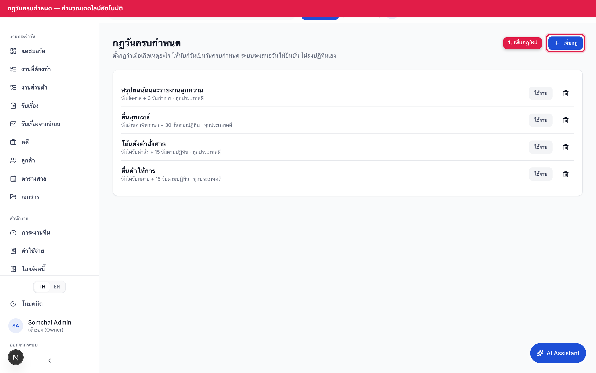
50 / 53
วันหยุดราชการ — ใช้คำนวณวันทำการ
/admin/holidays
รายการวันหยุดราชการที่ระบบใช้นับวันทำการเวลาคำนวณกำหนดส่งงาน เพิ่มทีละวันหรือวางเป็นชุดได้ (Bulk add)
1 วางรายการวันหยุดหลายวันพร้อมกัน
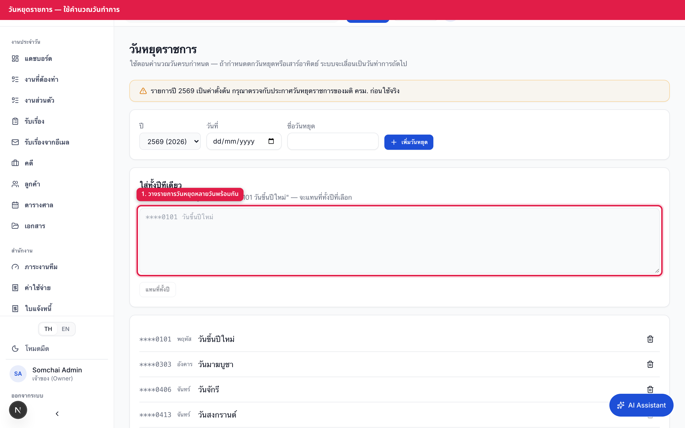
51 / 53
เริ่มต้นสำนักงานของคุณ — สมัครใช้งาน
/register
หน้าสมัครสำนักงานใหม่ กรอกชื่อสำนักงาน อีเมล และรหัสผ่าน ระบบจะสร้างสำนักงาน (tenant) แยกของตัวเองให้ทันที
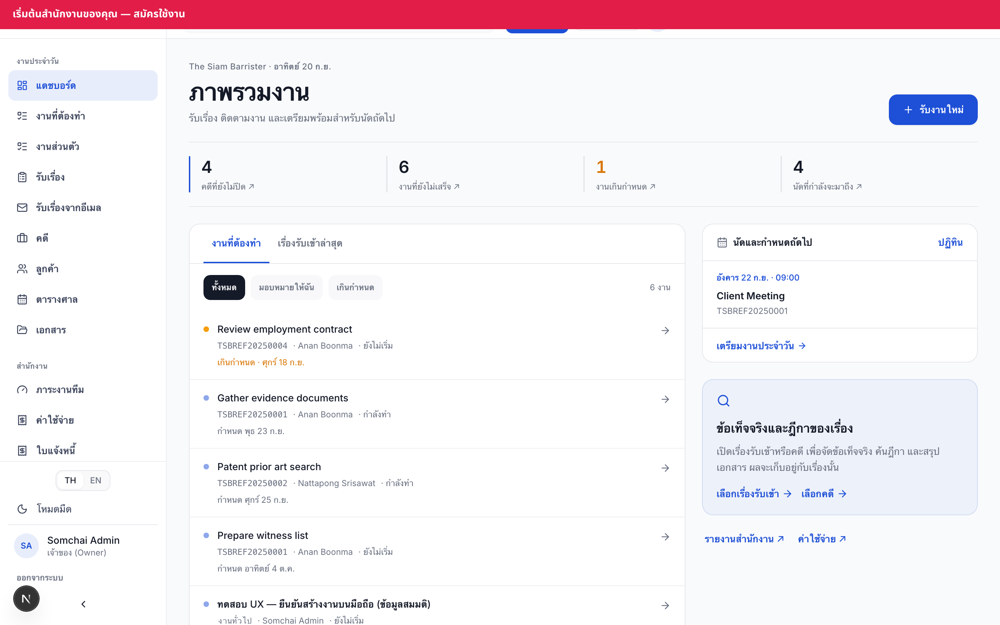
52 / 53
ลืมรหัสผ่าน — ขอลิงก์ตั้งรหัสผ่านใหม่
/forgot-password
กรอกอีเมลที่ใช้สมัคร ระบบจะส่งลิงก์สำหรับตั้งรหัสผ่านใหม่ไปให้ทางอีเมล
1 ส่งลิงก์ตั้งรหัสผ่านใหม่
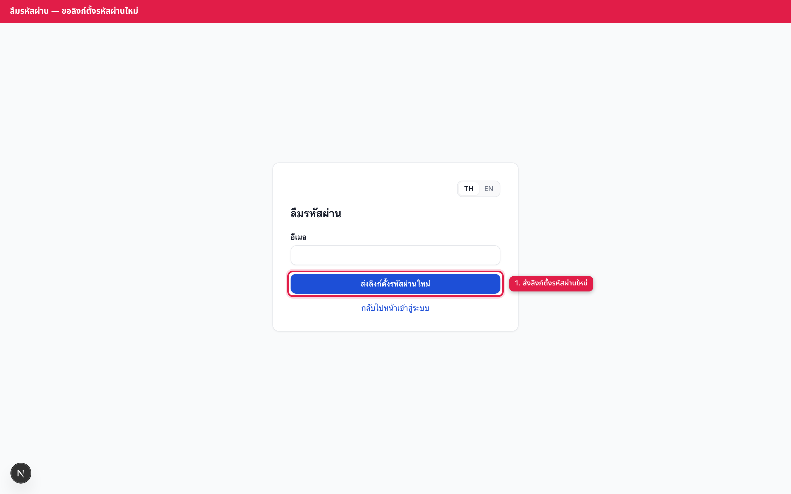
53 / 53
หน้าแรกของ Samnuan
/
หน้าแนะนำระบบสำหรับผู้ที่ยังไม่ได้เป็นลูกค้า อธิบายจุดเด่นของระบบและมีปุ่มขอทดลองใช้งานฟรี
1 ขอทดลองใช้งานฟรี
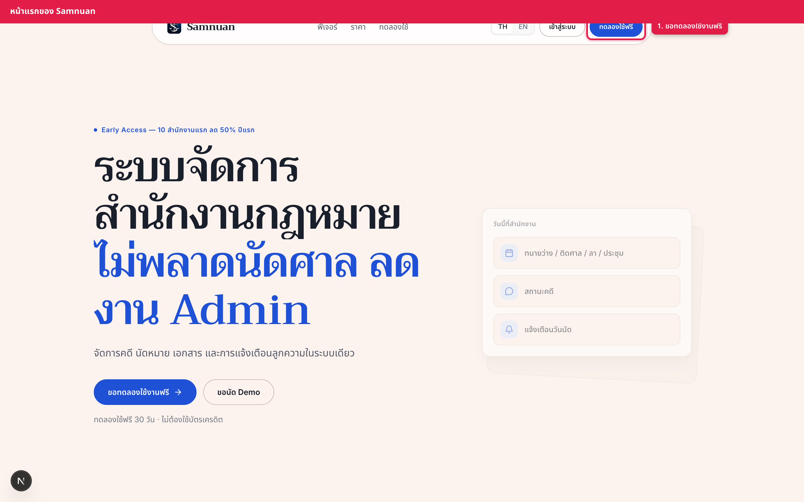
LINE
ใช้งานผ่าน LINE — คุยกับบอทของสำนักงานแทนเปิดเว็บ
LINE Official Account
นอกจากเปิดเว็บ พนักงานยังสั่งงานผ่านแชท LINE OA ของสำนักงานได้เลย — สร้างคดี เพิ่มงาน บันทึกค่าใช้จ่าย
หรือดูงานวันนี้ โดยพิมพ์คำสั่งหรือแตะปุ่มในแชท ไม่ต้องเปิดแอปเว็บก็ได้ ระบบยังส่งแจ้งเตือนนัดหมายล่วงหน้า
3 วันก่อนถึงวันนัดให้ทาง LINE โดยอัตโนมัติหลังเชื่อมต่อบัญชีแล้ว
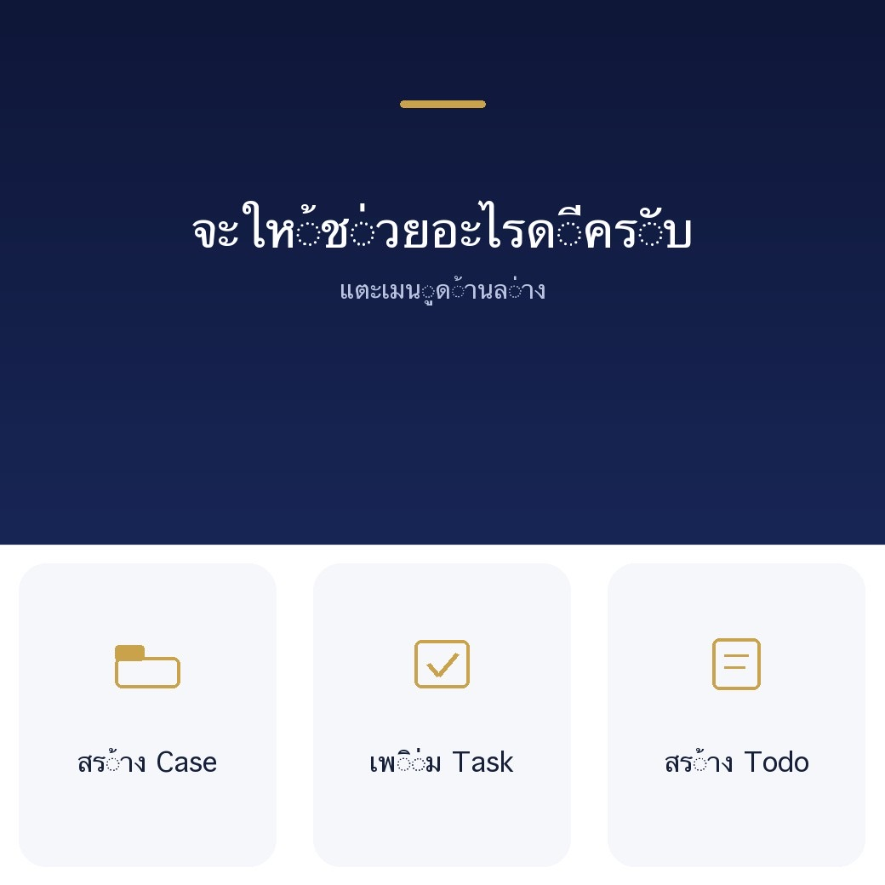
ขั้นตอนที่ 1 — เพิ่มเพื่อนและเชื่อมต่อบัญชี LINE (ทำครั้งเดียว)
ก่อนสั่งงานผ่านแชทได้ ต้องมี LINE Official Account ของสำนักงานก่อน (แอดมินตั้งค่า Channel ID/Secret ที่หน้า
ตั้งค่า → การเชื่อมต่อ → LINE Messaging API — ถ้าเห็นข้อความ "ระบบ LINE ยังไม่ได้ตั้งค่า" แปลว่ายังไม่มีใครตั้งค่าส่วนนี้
ต้องให้แอดมินไปสร้าง Channel ใน LINE Developers Console ก่อน แล้วกรอก Channel ID/Secret/Access Token)
เข้าเว็บแอป ไปที่หน้า ตั้งค่า (/settings) → หัวข้อ การเชื่อมต่อ → กดปุ่ม "เชื่อมต่อ LINE" ใต้หัวข้อ "เชื่อมต่อ LINE ส่วนตัว" (ดูสไลด์ 23 — ตั้งค่า)
หน้าจะแสดง "1. เพิ่มเพื่อน Official Account [ที่นี่]" — กดลิงก์นี้เพื่อเปิด LINE แล้วกด Add friend เพิ่มบัญชีสำนักงานเป็นเพื่อน (ถ้าเพิ่มเพื่อนไว้แล้วข้ามขั้นนี้ได้เลย)
กลับมาที่เว็บ จะเห็น "2. ส่งรหัสด้านล่างในแชท LINE" พร้อมรหัสรูปแบบ LF-XXXXXX (กด "คัดลอก" ได้) — รหัสมีอายุ 15 นาที ถ้าหมดอายุกด "สร้างรหัสใหม่"
เปิดแชท LINE Official Account ที่เพิ่งเพิ่มเพื่อน แล้วพิมพ์/วางรหัสนั้นส่งเข้าไปในแชท
บอทตอบ "✅ เชื่อมต่อสำเร็จ! สวัสดีคุณ …คุณจะได้รับแจ้งเตือนนัดหมายล่วงหน้า 3 วันก่อนถึงวันนัด" — เสร็จแล้ว ใช้งานได้ทันที
เมนูหลัก
ทักบอทด้วยคำว่า "เมนู" เมื่อไหร่ก็ได้เพื่อกลับมาที่เมนูรูปภาพด้านบน (3 ปุ่มที่เห็นในรูป: สร้าง Case /
เพิ่ม Task / สร้าง Todo) และมีปุ่มลัดเพิ่มเติมใต้เมนูอีก 3 ปุ่ม: 💸 ค่าใช้จ่าย, 💰 เบิกล่วงหน้า, 📊 งานวันนี้
ระหว่างทำรายการค้างอยู่ พิมพ์ "เมนู" เพื่อกลับหน้าแรก หรือ "ยกเลิก" เพื่อเลิกทำรายการนั้นได้ทุกเมื่อ
ขั้นตอนที่ 2 — ใช้แต่ละคำสั่ง
📋 สร้าง Case
พิมพ์ "สร้าง Case" หรือแตะปุ่มบนเมนูรูปภาพ
บอทถาม "ชื่อเรื่อง/หัวข้อคดีคืออะไรครับ?" — พิมพ์หัวข้อคดี "ลูกความชื่ออะไรครับ? (พิมพ์ชื่อเพื่อค้นหา)" — พิมพ์ชื่อ บอทจะค้นในรายชื่อลูกค้าที่มีอยู่ให้เลือก หรือกด "ไม่เจอ" เพื่อใช้ชื่อที่พิมพ์ไปตรง ๆ "มีผู้รับผิดชอบร่วมไหมครับ? (เลือกได้หลายคน)" — เลือกทนาย/ผู้ช่วยที่ดูแลร่วม แล้วกด "พอแล้ว" "มีรายละเอียดเพิ่มเติมไหมครับ?" — พิมพ์รายละเอียดหรือกด "ไม่ระบุ" บอทสรุปข้อมูลทั้งหมดให้ตรวจ กด "ยืนยัน" เพื่อสร้างคดี หรือกดหัวข้อที่ต้องการแก้ก่อน
✅ เพิ่ม Task
พิมพ์ "เพิ่ม Task" หรือแตะปุ่มบนเมนูรูปภาพ
"ชื่องานที่จะมอบหมายคืออะไรครับ?" — พิมพ์ชื่องาน บอทให้ "เลือกคดีครับ" — พิมพ์ชื่อ/เลขคดีเพื่อค้นหา หรือกด "นอกคดี" ถ้าเป็นงานที่ไม่ผูกกับคดีไหน "กำหนดส่ง" — เลือกวันครบกำหนด "มอบหมายให้ใครครับ?" — เลือกผู้รับผิดชอบ ตรวจสรุปแล้วกด "ยืนยัน" — งานจะไปโผล่ในหน้า งานที่ต้องทำ/รายละเอียดคดี ทันที
📝 สร้าง Todo
พิมพ์ "สร้าง Todo" หรือแตะปุ่มบนเมนูรูปภาพ
"สร้าง Todo ใหม่ — ชื่องานคืออะไรครับ?" — พิมพ์ชื่องานส่วนตัว (ไม่ผูกกับคดี) "กำหนดส่ง" — เลือกวันครบกำหนด (ข้ามได้) "มอบหมายให้ใครครับ?" — ปกติจะเป็นตัวเอง หรือมอบให้คนอื่นได้ กด "ยืนยัน" — ไปโผล่ในหน้า งานส่วนตัว (/todos) ของผู้รับ
💸 บันทึกค่าใช้จ่าย
พิมพ์ "บันทึกค่าใช้จ่าย" หรือแตะชิป "💸 ค่าใช้จ่าย" ใต้เมนู
"จะกรอกเองหรือให้ AI อ่านจากรูปใบเสร็จครับ?" — เลือก "AI อ่านจากรูป" แล้วส่งรูปใบเสร็จ หรือเลือก "กรอกเอง" ถ้าส่งรูป AI จะอ่านยอดเงินให้อัตโนมัติ ถ้าอ่านไม่ได้บอทจะถามยอดเงินเอง "ค่าอะไรครับ? (เช่น ค่าส่งเอกสาร)" — พิมพ์รายละเอียดค่าใช้จ่าย "ผูกกับคดีไหนครับ?" — พิมพ์ชื่อคดีเพื่อค้นหา หรือกด "ข้าม" ถ้าเป็นค่าใช้จ่ายทั่วไปของสำนักงาน กด "ยืนยัน" — รายการจะเข้าไปเป็นสถานะร่างในหน้า ค่าใช้จ่าย (/expenses) รอส่งขออนุมัติ
💰 เบิกล่วงหน้า
พิมพ์ "เบิกล่วงหน้า" หรือแตะชิป "💰 เบิกล่วงหน้า" ใต้เมนู (เฉพาะเจ้าของสำนักงาน)
"จ่ายเงินสำรองล่วงหน้าให้ใครครับ?" — เลือกสมาชิกในทีมที่จะรับเงินสำรอง "จำนวนเงินเท่าไหร่ครับ?" — พิมพ์จำนวนเงิน (ตัวเลขมากกว่า 0) "หมายเหตุครับ (หรือกด "ข้าม")" — ใส่เหตุผล/รายละเอียด กด "ยืนยัน" — ผู้รับจะได้ข้อความ LINE แจ้งทันทีว่า "💰 คุณได้รับเงินสำรองจ่าย…"
📊 งานของฉันวันนี้
พิมพ์ "งานของฉันวันนี้" ตรง ๆ หรือแตะชิป "📊 งานวันนี้" ใต้เมนู
บอทตอบกลับสรุปนัดและงานที่ครบกำหนดวันนี้ทันที — เนื้อหาเดียวกับหน้า วันของฉัน (/my-day) บนเว็บ แต่ดูได้จากแชทโดยไม่ต้องเปิดแอป